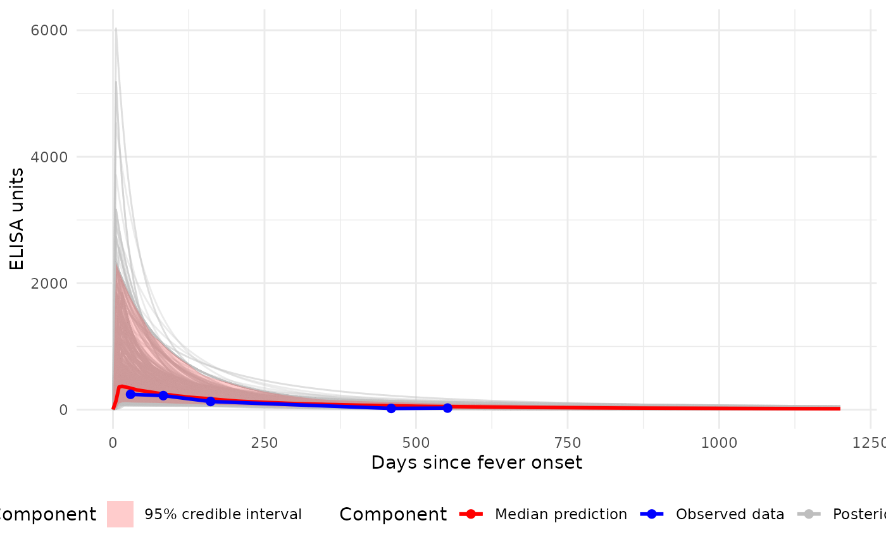
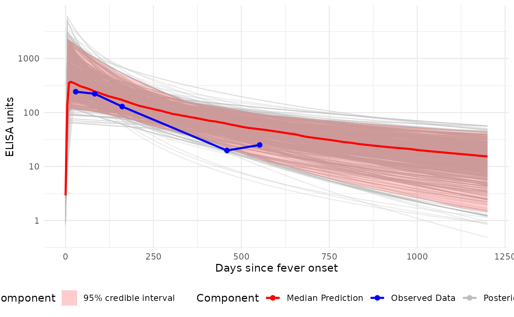
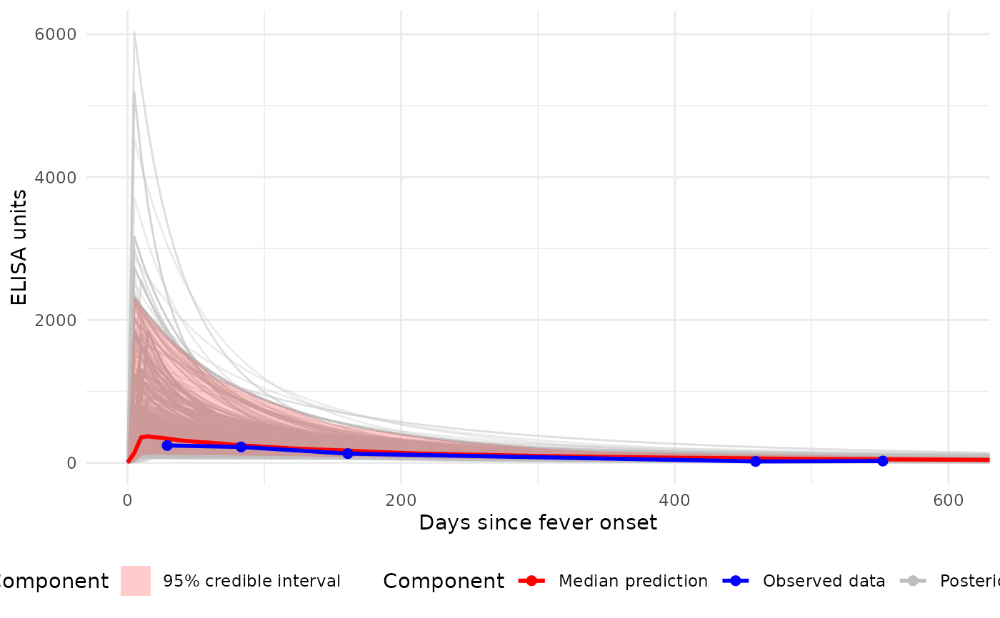

Generate Predicted Antibody Response Curves (Median + 95% CI)
Source:R/plot_predicted_curve.R
plot_predicted_curve.RdPlots a median antibody response curve with a 95% credible interval ribbon, using MCMC samples from the posterior distribution. Optionally overlays observed data, applies logarithmic spacing on the y- and x-axes, and shows all individual sampled curves.
Usage
plot_predicted_curve(
jags_post,
id,
antigen_iso,
dataset = NULL,
legend_obs = "Observed data",
legend_median = "Median prediction",
show_quantiles = TRUE,
log_scale = FALSE,
log_x = FALSE,
show_all_curves = FALSE,
alpha_samples = 0.3,
xlim = NULL
)Arguments
- jags_post
An object returned by
run_mod()containing the full posterior parameter samples.- id
The participant ID to plot; for example, "sees_npl_128".
- antigen_iso
The antigen isotype to plot; for example, "HlyE_IgA" or "HlyE_IgG".
- dataset
(Optional) A dplyr::tbl_df with observed antibody response data. Must contain:
timeindaysvalueidantigen_iso
- legend_obs
Label for observed data in the legend.
- legend_median
Label for the median prediction line.
- show_quantiles
logical; if TRUE (default), plots the 2.5%, 50%, and 97.5% quantiles.
- log_scale
logical; if TRUE, applies a log10 transformation to the y-axis.
- log_x
logical; if TRUE, applies a log10 transformation to the x-axis.
- show_all_curves
logical; if TRUE, overlays all individual sampled curves.
- alpha_samples
Numeric; transparency level for individual curves (default = 0.3).
- xlim
(Optional) A numeric vector of length 2 providing custom x-axis limits.
Value
A ggplot2::ggplot object displaying predicted antibody response curves with a median curve and a 95% credible interval band as default.
Examples
# 1) Prepare the on-the-fly dataset
dataset <- serodynamics::nepal_sees |>
as_case_data(
id_var = "id",
biomarker_var = "antigen_iso",
value_var = "value",
time_in_days = "timeindays"
) |>
dplyr::rename(
strat = bldculres,
timeindays = dayssincefeveronset,
value = result
)
# 2) Extract just the one subject/antigen for overlay later
dat <- dataset |>
dplyr::filter(id == "sees_npl_128", antigen_iso == "HlyE_IgA")
# 3) Fit the model to the full dataset
model <- run_mod(
data = dataset,
file_mod = serodynamics_example("model.jags"),
nchain = 2,
nadapt = 100,
nburn = 100,
nmc = 500,
niter = 1000,
strat = "strat",
with_post = TRUE
)
#> Calling 2 simulations using the parallel method...
#> Following the progress of chain 1 (the program will wait for all chains
#> to finish before continuing):
#> Welcome to JAGS 4.3.2 on Sun Jul 13 20:33:44 2025
#> JAGS is free software and comes with ABSOLUTELY NO WARRANTY
#> Loading module: basemod: ok
#> Loading module: bugs: ok
#> . . Reading data file data.txt
#> . Compiling model graph
#> Resolving undeclared variables
#> Allocating nodes
#> Graph information:
#> Observed stochastic nodes: 690
#> Unobserved stochastic nodes: 384
#> Total graph size: 14802
#> . Reading parameter file inits1.txt
#> . Initializing model
#> . Adapting 100
#> -------------------------------------------------| 100
#> ++++++++++++++++++++++++++++++++++++++++++++++++++ 100%
#> Adaptation incomplete.
#> . Updating 100
#> -------------------------------------------------| 100
#> ************************************************** 100%
#> . . . . . . Updating 1000
#> -------------------------------------------------| 1000
#> ************************************************** 100%
#> . . . . Updating 0
#> . Deleting model
#> .
#> All chains have finished
#> Warning: The adaptation phase of one or more models was not completed in 100 iterations, so the current samples may not be optimal - try increasing the number of iterations to the "adapt" argument
#> Simulation complete. Reading coda files...
#> Coda files loaded successfully
#> Finished running the simulation
#> Calling 2 simulations using the parallel method...
#> Following the progress of chain 1 (the program will wait for all chains
#> to finish before continuing):
#> Welcome to JAGS 4.3.2 on Sun Jul 13 20:33:52 2025
#> JAGS is free software and comes with ABSOLUTELY NO WARRANTY
#> Loading module: basemod: ok
#> Loading module: bugs: ok
#> . . Reading data file data.txt
#> . Compiling model graph
#> Resolving undeclared variables
#> Allocating nodes
#> Graph information:
#> Observed stochastic nodes: 214
#> Unobserved stochastic nodes: 130
#> Total graph size: 4771
#> . Reading parameter file inits1.txt
#> . Initializing model
#> . Adapting 100
#> -------------------------------------------------| 100
#> ++++++++++++++++++++++++++++++++++++++++++++++++++ 100%
#> Adaptation incomplete.
#> . Updating 100
#> -------------------------------------------------| 100
#> ************************************************** 100%
#> . . . . . . Updating 1000
#> -------------------------------------------------| 1000
#> ************************************************** 100%
#> . . . . Updating 0
#> . Deleting model
#> .
#> All chains have finished
#> Warning: The adaptation phase of one or more models was not completed in 100 iterations, so the current samples may not be optimal - try increasing the number of iterations to the "adapt" argument
#> Simulation complete. Reading coda files...
#> Coda files loaded successfully
#> Finished running the simulation
# 4a) Plot (linear axes) with all individual curves + median ribbon
p1 <- plot_predicted_curve(
jags_post = model,
id = "sees_npl_128",
antigen_iso = "HlyE_IgA",
dataset = dat,
legend_obs = "Observed data",
legend_median = "Median prediction",
show_quantiles = TRUE,
log_scale = FALSE,
log_x = FALSE,
show_all_curves = TRUE
)
print(p1)

# 4b) Plot (log10 y-axis) with all individual curves + median ribbon
p2 <- plot_predicted_curve(
jags_post = model,
id = "sees_npl_128",
antigen_iso = "HlyE_IgA",
dataset = dat,
legend_obs = "Observed data",
legend_median = "Median prediction",
show_quantiles = TRUE,
log_scale = TRUE,
log_x = FALSE,
show_all_curves = TRUE
)
print(p2)

# 4c) Plot with custom x-axis limits (0-600 days)
p3 <- plot_predicted_curve(
jags_post = model,
id = "sees_npl_128",
antigen_iso = "HlyE_IgA",
dataset = dat,
legend_obs = "Observed data",
legend_median = "Median prediction",
show_quantiles = TRUE,
log_scale = FALSE,
log_x = FALSE,
show_all_curves = TRUE,
xlim = c(0, 600)
)
print(p3)
